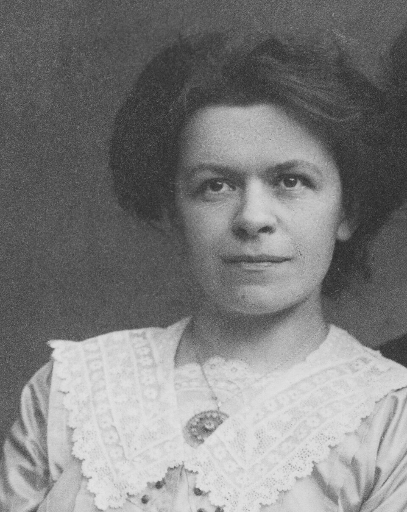
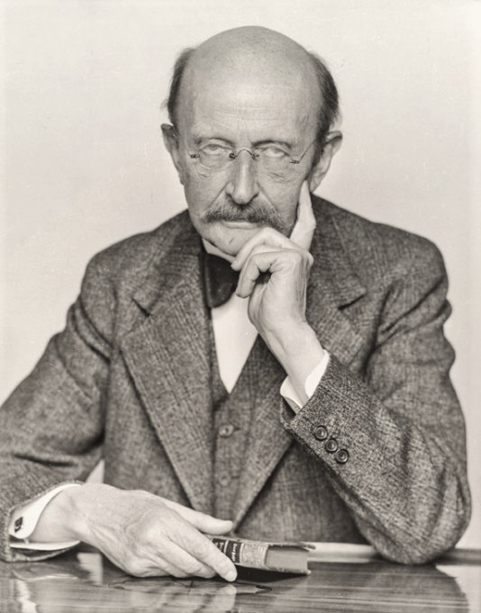

Альберт Ейнштейн
Альберт Ейнштейн.
Перейти до розділу "Карта-зображення"
Біографія:
 Альберт Ейнштейн — німецький фізик-теоретик, один із засновників сучасної теоретичної фізики, лауреат Нобелівської премії 1921 року.
Народився 14 березня 1879 року в Ульмі, Німеччина.
1905 рік став відомим як "Annus Mirabilis" (Чудовий рік), коли він опублікував чотири революційні статті, що заклали основи сучасної фізики.
У 1933 році Ейнштейн емігрував до Сполучених Штатів, де став професором в Інституті перспективних досліджень у Прінстоні.
Альберт Ейнштейн — німецький фізик-теоретик, один із засновників сучасної теоретичної фізики, лауреат Нобелівської премії 1921 року.
Народився 14 березня 1879 року в Ульмі, Німеччина.
1905 рік став відомим як "Annus Mirabilis" (Чудовий рік), коли він опублікував чотири революційні статті, що заклали основи сучасної фізики.
У 1933 році Ейнштейн емігрував до Сполучених Штатів, де став професором в Інституті перспективних досліджень у Прінстоні.
Близькі за духом люди (Колеги та Родина)
- Мілева Марич (перша дружина та колега)
- Макс Планк (засновник квантової теорії)
- Нільс Бор (автор моделі атома)
- Давид Гільберт (математик, незалежно вивів рівняння ЗТВ)
- Ельза Ейнштейн (двоюрідна сестра і друга дружина)
Зображення (Колеги)

Мілева Марич

Макс Планк
- Ейнштейн відмовився від посади президента Ізраїлю, яку йому запропонували у 1952 році, мотивуючи це відсутністю досвіду в роботі з людьми.
- Його Нобелівська премія 1921 року була присуджена не за теорію відносності, а за пояснення **фотоелектричного ефекту**.
Основні Теорії:
- Спеціальна Теорія Відносності (СТВ)
- Опублікована у 1905 році. Вона описує рух тіл за відсутності гравітації та постулює, що закони фізики однакові для всіх спостерігачів, що рухаються рівномірно відносно один одного. Головний принцип — швидкість світла є сталою для всіх.
- Загальна Теорія Відносності (ЗТВ)
- Опублікована у 1915 році. Ця теорія розглядає гравітацію як геометричний ефект, викривлення простору-часу масивними тілами. Вона замінила закон всесвітнього тяжіння Ньютона.
- Рівняння $E=mc^2$
- Формула, що виражає еквівалентність маси та енергії. Вона показує, що маса може бути перетворена в енергію, і навпаки. Це наріжний камінь ядерної фізики.
- Фотоелектричний ефект (квантова природа світла)
- Пояснення цього явища стало підтвердженням квантової гіпотези Макса Планка. Ейнштейн припустив, що світло складається з дискретних частинок — фотонів, і пояснив, як вони «вибивають» електрони з металу.
Спадкоємство та Вплив:
Він був видатним вченим і мислителем. Його роботи радикально змінили фізику XX століття. Ейнштейн був першим, хто зрозумів і популяризував поняття простору-часу. Його відстоювання миру та соціальної справедливості зробило його іконою гуманізму.
Карта-зображення (Перехід на інші сторінки)